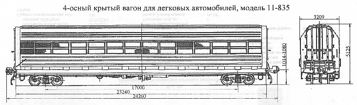

Назначение: для перевозки легковых автомобилей
Параметры
| Номер проекта | 835.00.000 |
| Технические условия | ТУ424.05.822-84 |
| Модель вагона | 11-835 |
| Тип вагона | 926 |
| Изготовитель | фирма "Раутаруукки" Финляндия |
| Грузоподъемность, т | 15 |
| Масса тары вагона, т | 35 |
| Нагрузка: статическая осевая, кН(тс) |
122,5(12,5) |
| погонная, кН/м(тс/м) | 21,1(2,15) |
| Скорость конструкционная, км/ч | 120 |
| Габарит | 1-Т |
| База вагона, мм | 17000 |
| Длина, мм: по осям сцепления автосцепок |
24260 |
| по концевым балкам рамы (длина рамы) | 23240 |
| Высота от уровня верха головок рельсов максимальная, мм | 5125 |
| Количество осей, шт. | 4 |
| Модель 2-осной тележки | 18-100 |
| Наличие переходной площадки | нет |
| Наличие стояночного тормоза | есть |
| Высота ярусов, мм первого |
1820 |
| второго | 1894 |
| Количество ярусов, шт. | 2 |
| Ширина кузова, мм наружная (по раме) |
3150 |
| внутренняя (по стойкам) | 3030 |
| Количество атомобилей, перевозимых в вагоне, шт.: ГАЗ-24;ГАЗ-31 |
8 |
| "Москвич-21", "Москвич-41" | 10 |
| "Нива"; ЗАЗ; ЛУАЗ | 12 |
| Ширина дверного проема в свету, мм | 2400 |
| Год постановки на серийное производство или закупки вагона | |
| Возможность установки буферов | нет |